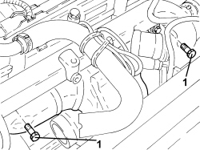
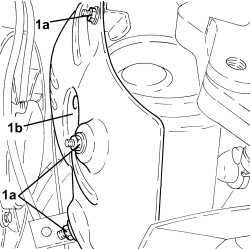
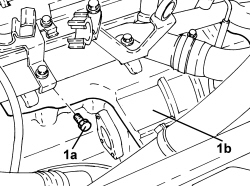

1072C44 EXHAUST MANIFOLD HEAT SHIELD - R+R
- Path
- Procedures > 10 ENGINE > 1072 INLET AND EXHAUST MANIFOLDS > 1072C EXHAUST MANIFOLDS > 1072C44 EXHAUST MANIFOLD HEAT SHIELD - R+R
- Kind
- repair procedure (removal / refitting; the operation number is the code)
- Applies to
- engines: 1.9 JTD 16V, 2.4 JTD 20V; all production periods
- Interactive page
- https://sloeber94.github.io/elrnDB/#/939010599
Applies to: engines: 1.9 JTD 16V; all production periods
 Removing
Removing
 Refitting
Refitting- Position the vehicle on a lift.
Op. 1084A16 OIL DIPSTICK PIPE - R.R
Op. 1048A50 TURBOCHARGER AIR INTAKE PIPE - R.R.
Op. 1088D10 LOWER RADIATOR COOLANT OUTLET HOSE - R.R.
Op. 1088D14 UPPER RADIATOR COOLANT OUTLET HOSE - R.R.
1. Undo the upper bolts fixing the exhaust manifold heat shield.

Applies to: engines: 1.9 JTD 16V; all production periods
1. Working underneath the vehicle, undo the nuts (1a) and remove the exhaust manifold heat shield (1b).

Applies to: engines: 1.9 JTD 16V; all production periods
Refitting
Removing- Place the exhaust manifold heat shield back in its housing and secure it using the nuts and bolts.
Op. 1088D14 UPPER RADIATOR COOLANT OUTLET HOSE - R.R.
Op. 1088D10 LOWER RADIATOR COOLANT OUTLET HOSE - R.R.
Op. 1048A50 TURBOCHARGER AIR INTAKE PIPE - R.R.
Op. 1084A16 OIL DIPSTICK PIPE - R.R
Op. 0010T20 ENGINE COOLANT - CHANGE
- Remove the vehicle from the lift.
Applies to: engines: 2.4 JTD 20V; all production periods
Removing
RefittingOp. 1016A10 SOUND-PROOFING COVER - R.R
Op. 1048A42 SLEEVE FROM FLOW METER TO TURBO CHARGER AIR INLET PIPE - R + R
Op. 1048A51 TURBOCHARGER RIGID AIR INLET HOSE - R.R.
Op. 7055B54 UNDER ENGINE PROTECTION/GUARD - R.R.
1. Undo the fastenings (1a) and remove the exhaust manifold heat shield (1b).

Applies to: engines: 2.4 JTD 20V; all production periods
Refitting
Removing- Place the exhaust manifold heat shield back in its housing and tighten it it using the fastenings.
Op. 7055B54 UNDER ENGINE PROTECTION/GUARD - R.R.
Op. 1048A51 TURBOCHARGER RIGID AIR INLET HOSE - R.R.
Op. 1048A42 SLEEVE FROM FLOW METER TO TURBO CHARGER AIR INLET PIPE - R + R
Topics linked from this page (9)
- 0010T20 ENGINE COOLANT - CHANGE
- 1016A10 SOUND-PROOFING COVER - R.R
- 1048A42 SLEEVE FROM FLOW METER TO TURBO CHARGER AIR INLET PIPE - R + R
- 1048A50 TURBOCHARGER AIR INTAKE PIPE - R.R.
- 1048A51 TURBOCHARGER RIGID AIR INLET HOSE - R.R.
- 1084A16 OIL DIPSTICK PIPE - R.R
- 1088D10 LOWER RADIATOR COOLANT OUTLET HOSE - R.R.
- 1088D14 UPPER RADIATOR COOLANT OUTLET HOSE - R.R.
- 7055B54 UNDER ENGINE PROTECTION/GUARD - R.R.